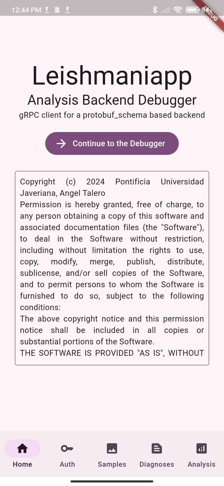
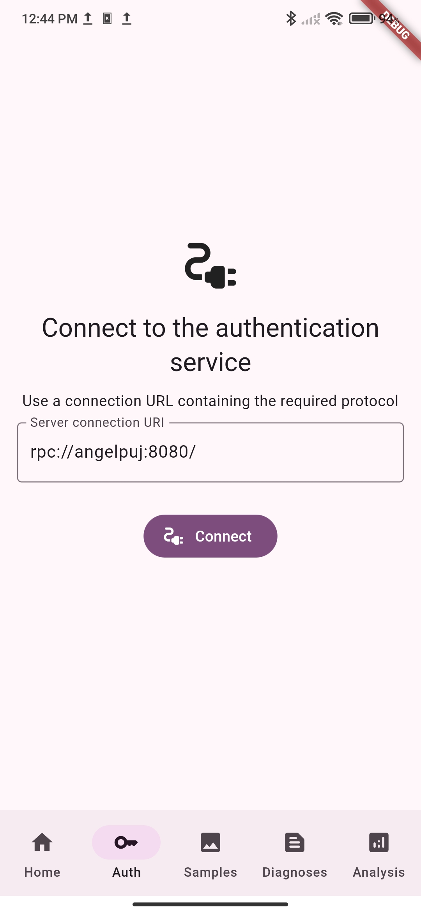
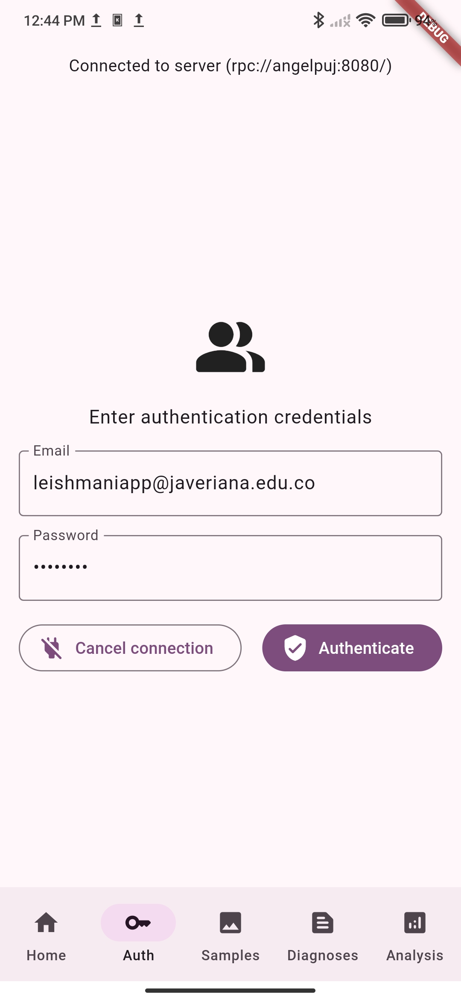
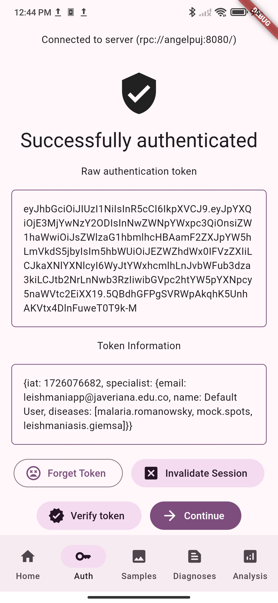
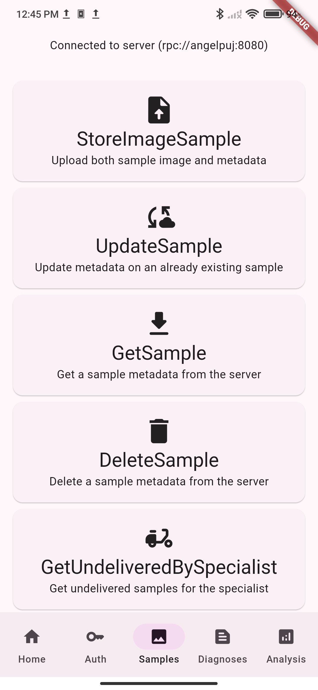
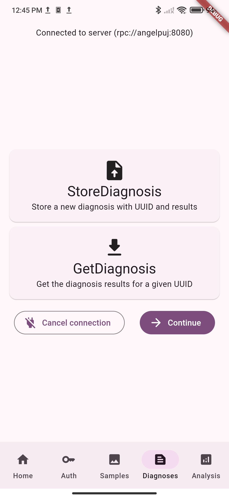
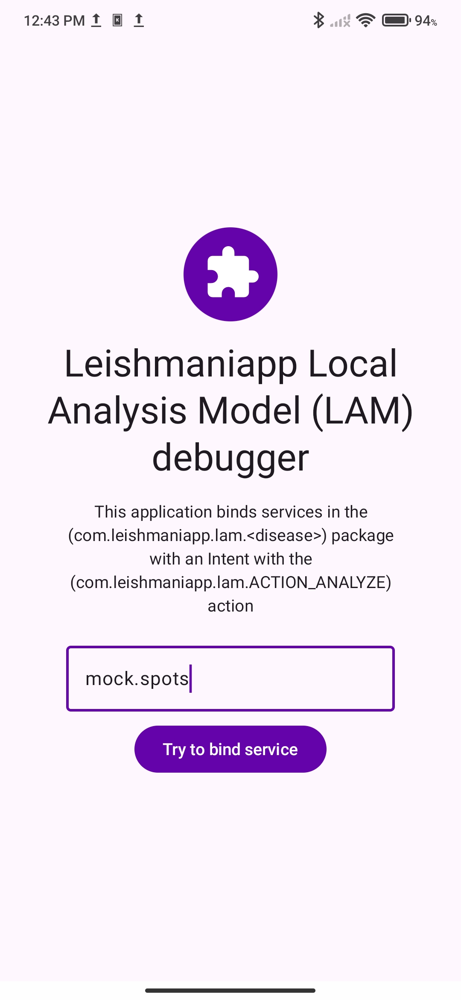
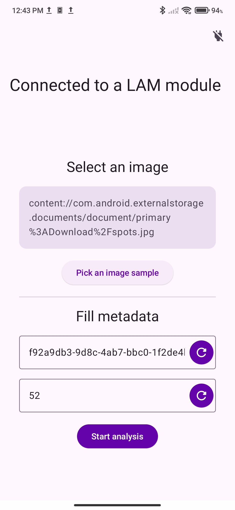
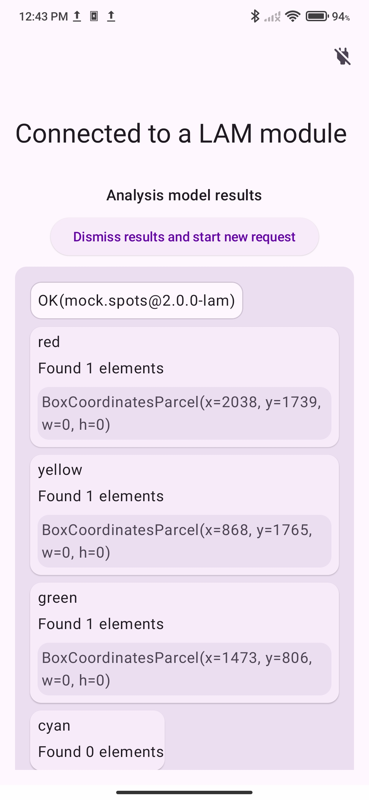

🪲 Depuradores
Aplicaciones adicionales creadas con el fin de depurar y probar la infrastructura de Leishmaniapp durante su desarrollo
Leishmaniapp Backend Debugger
Link del repositorio: github.com/leishmaniapp/backend_debugger
Aplicación utilizada como cliente gRPC para probar los métodos ofrecidos por cada uno de los servicios de la infrastructura cloud
Compilación
Esta es una aplicación multiplataforma construida con el framework Flutter, por lo que puede ser utilizada en cualquier dispositivo, para compilarla siga los siguientes pasos:
- Instale el SDK de Flutter y verifique su instalación con
flutter doctor -v - Clone el repositorio
git clone git@github.com:leishmaniapp/backend_debugger.gity navegue hasta el directorio del proyecto - Descargue el submodulo para el esquema de protobuf con el siguiente comando:
- Descargue las dependencias del proyecto con el siguiente comando
- Compile los archivos del esquema de protobuf con el siguiente comando
- Compile e instale el proyecto
flutter run -d (your device)
Funcionamiento
Una vez en la pantalla principal puede conectarse a cada uno de los servicios disponibles en la barra de navegación inferior, cada uno de estos servicios le solicitará una URL de conexión al servicio, utilice el protocolo rpc:// para conectarse a los servicios. Una vez conectado se muestra un menú con todos los métodos disponibles, tenga en cuenta que algunos de estos servicios requieren autenticación, utilice la pestaña 'auth' para obtener el token.
A continuación algunas capturas de pantalla de la aplicación.
|  |  |  |
|  |  |  |
{kind=link}
{kind=link}
{kind=link}
{kind=link}
{kind=link}
{kind=link}
Leishmaniapp LAM Debugger
Link del repositorio: github.com/leishmaniapp/lam-debugger-android
Aplicación utilizada para probar conexión con modelos LAM locales en el dispositivo.
En la pantalla inicial digite el identificador de la enfermedad a utilizar, el programa utilizará el nombre de paquete com.leishmaniapp.lam.[disease] (donde [disease] es el identificador de la enfermedad previamente digitado) para enlazar el bound service asociado al modelo LAM, luego de mostrará una pantalla desde la cual se selecciona la imagen a utilizar y se rellenan los metadatos de la petición, estos metadatos pueden ser autogenerados oprimiendo el botón situado al costado, una vez iniciado el análisis se mostrará una ventana de carga y finalmente se mostraran los resultados arrojados por el modelo.
A continuación capturas de pantallas del depurador analizando una muestra de la enfermedad de pruebas mock.spots
| Pantalla de Inicio | Selección de imágen | Resultados del modelo |
|---|---|---|
|  |  |  |
{kind=link}
{kind=link}
{kind=link}